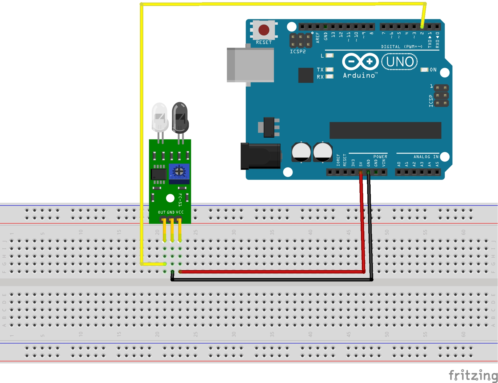

Course: TECH 117 (Computer Engineering Technology, Winter 2025)
Instructor: Ph.D. Ana Rodrigues
Team Members:
This project is a simple security system that detects when a door is opened and triggers an alarm using a buzzer, infrared sensor and LED. It helps prevent unauthorized access by alerting the user immediately.
The system can be used for home or room security. It should be able to detect when the door is opened and trigger an alarm, providing a simple yet effective security solution, it will beep when the door is opened and as an option a LED will light up to indicate the status of the door.
One of the hardest parts of the project was to find a way to make the system work with an infrared sensor, since it is not as common as other sensors, also there is not enough time to make it really good as we would like, it was a little hard to find stuff where to find references and information about how to use the infrared sensor.
Although we weren't familiar with C++ programming, we successfully implemented the project by researching existing examples and refining the code through extensive testing.
The first image shows the overall circuit design that we will be using for the Smart Door Anti-Intrusion Alarm System, in this circuit we have an Arduino Uno Rev3 as the main controller, an infrared sensor (IR) to detect when the door is opened, a passive buzzer to sound the alarm, and a red LED to indicate the status of the door. The IR sensor will be placed in such a way that it can detect when the door is opened by having a small wall that blocks the signal from the sensor and turns on when we move the door from the wall, and the LED will blink and show us that someone is breaking into the house.
Note that in the first image, We are using an PIR Sensor to simulate the infrared sensor behavior.

The second image showsthe infrared sensor (IR) we can have a door alarm that detects when it opens by having an small wall that blocks the signal from the sensor and turns on when we move the door from he wall, and the LED will blink and show show us that someone is breaking into the house.

| Item | Qty | Unit Price | Subtotal | Source |
|---|---|---|---|---|
| Arduino Uno Rev3 | 1 | $6.31 | $6.31 | AliExpress |
| IR Infrared Obstacle Avoidance Sensor | 1 | $1.00 | $1.00 | AliExpress |
| Passive Buzzer | 1 | $1.32 | $1.32 | Digi-Key |
| LEDs (Red) | 1 | $0.40 | $0.40 | Digi-Key |
| 220 Ω Resistors | 3 | $0.16 | $0.48 | Digi-Key |
| Breadboard and Jumper Wires | 1 | $9.99 | $9.99 | Amazon |
| Estimated Total | $23.00 | — | ||
The following image shows the assembled prototype on a breadboard.

The following Arduino code controls the system, lighting LEDs and activating the buzzer based on distance readings from the HC-SR04 sensor.
// Collision Warning System with Distance Sensor (HC-SR04)
// Author: Ana Rodrigues
// Oct 2, 2025
// Object is farther than 50cm: Green LED lights up
// Object is closer than 50 cm, but more than 10cm away: Yellow LED lights, buzzer plays 300Hz tone
// Object is closer than 10cm: Red LED lights up, buzzer plays 500Hz tone
//LED pins
const int greenLED = 2;
const int yellowLED = 3;
const int redLED = 4;
// Ultrasonic sensor pins
const int trigPin = 9;
const int echoPin = 10;
// Passive buzzer pin
const int buzzer = 11;
void setup() {
pinMode(greenLED, OUTPUT);
pinMode(yellowLED, OUTPUT);
pinMode(redLED, OUTPUT);
pinMode(trigPin, OUTPUT);
pinMode(echoPin, INPUT);
Serial.begin(9600);
}
void loop() {
// Measure distance
digitalWrite(trigPin, LOW);
delayMicroseconds(2);
digitalWrite(trigPin, HIGH);
delayMicroseconds(10);
digitalWrite(trigPin, LOW);
long duration = pulseIn(echoPin, HIGH);
long distance = duration * 0.034 / 2;
Serial.print("Distance: ");
Serial.print(distance);
Serial.println(" cm");
//Error in measurement:
if (distance <= 0)
return;
//Too close:
if (distance <= 10) {
digitalWrite(greenLED, LOW);
digitalWrite(yellowLED, LOW);
digitalWrite(redLED, HIGH);
tone(buzzer, 500); // Play 500Hz tone
return;
}
//Midrange:
if (distance <= 30) {
digitalWrite(greenLED, LOW);
digitalWrite(yellowLED, HIGH);
digitalWrite(redLED, LOW);
tone(buzzer, 300); // Play 300Hz tone
return;
}
//Normal status:
digitalWrite(greenLED, HIGH);
digitalWrite(yellowLED, LOW);
digitalWrite(redLED, LOW);
noTone(buzzer); // stop buzzer
delay(100);
}
The system effectively demonstrates distance-based alerting using Arduino. It’s affordable, educational, and sustainable through reusable components.